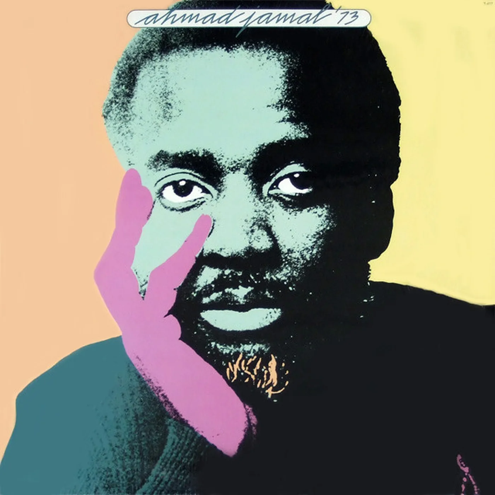

ReviewMay 23, 2023
Ahmad Jamal '73
Ahmad Jamal '73, on 20th Century Records: the trio's sense of space, moved onto electric piano.
Most listeners who know Ahmad Jamal know the acoustic trio: the 1958 live album At the Pershing, “Poinciana,” a left hand that could imply a whole rhythm section by refusing to play it, and a sense of space so widely copied that it stopped sounding like a choice. Ahmad Jamal ’73 is the electric turn. Released in 1973 on 20th Century Records, it puts him on Fender Rhodes, with a larger band and with covers that sit closer to the pop and soul records of that year than to the supper-club set. It is not a secret album. It is an album the beatmaking years dragged back into circulation because the chords sit in open air, and open air is what a sample needs.
The Rhodes is the instrument that makes the turn audible to anyone. An electric piano sustains. It blooms. It can be played sparsely and still fill a speaker, which suited a pianist whose whole reputation was the note he did not play. On the acoustic records the space was acoustic space: a room, a trio, brushes. On ’73 the space is amplified. The instrument holds the chord in the air while the band decides whether to answer. That is why producers later found the record so usable. A chord that hangs is a chord you can loop. Jamal had been leaving those hangs for fifteen years. The electric piano simply made them louder.
What the album is not is a fusion record in the busy sense. A lot of jazz in 1973 announced its modernity with density: more notes, more pedals, a solo that proved the pianist had heard the new decade. Jamal’s modernity is the opposite proof. He treats the Rhodes as a place to live rather than a costume, and he keeps the old habit of arranging the silence. Covers on the record — “The World Is a Ghetto” among them, War’s song, which tells you exactly which radio he was willing to be in conversation with — are played as if the tune were a room you furnish lightly. Originals sit in the same furniture. You do not need a discography to hear the continuity with the trio. You need to notice that nobody is rushing to fill the bar.
The afterlife in hip-hop is the part a magazine like this has to account for without pretending the afterlife is the meaning. Jamal has been sampled for decades. The samples work because he played as an editor. Hip-hop producers recognized an editor. That recognition can flatten the album into a crate item, a “loop record,” which is an insult to a pianist who was making commercial decisions in 1973 about how to reach a larger audience without surrendering dynamics. ’73 was a present-tense record. Its second life as source material came later and does not replace the first. Listening to it only for the break is like reading a novel for the epigraphs. You will find them. You will miss the book.
A short earlier note in this zine claimed a Swiss origin for the Rhodes and a year lived inside the instrument. The romance is not a fact this piece can verify, so it is not repeated. What can be verified is the discography: an established pianist, a new instrument, a 1973 release on a label that was not his old jazz home, and a touch that did not become loud just because the piano had a cable. Electric without getting loud about it — that part of the old note was criticism, and it holds.
Played now, Ahmad Jamal ’73 is a lesson in arrangement for anyone making electronic music out of keys. The lesson is not “use a Rhodes.” The lesson is that space survives amplification if the player believes in it. Riscape’s Club Copy EPs talk about classic structures and vintage color. They are not jazz records. They are records by a pianist who went into clubs. Jamal’s 1973 album is what it sounds like when a pianist takes a new keyboard and refuses to become a different musician. The ghetto of the War cover, the gloss of the label, the electric hum: all of it is 1973. The left hand is still his.